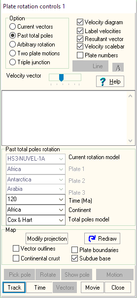

Plate Motions using Past Total Poles

Pick a time.
Pick the continent.
Pick Total Poles Model to use:
- Cox & Hart: every 20 Ma back to 200 Ma
- Duncan & Richards: 11, 21, 36, 42, 48, 58, 66, 80, 100, 120 Ma
Buttons:
- Track button will move the plate to its former position.
- Time will show all the plates at the selected time.
- Movie will create an animation of this model. You can change the map projection first with the Modify projection button.